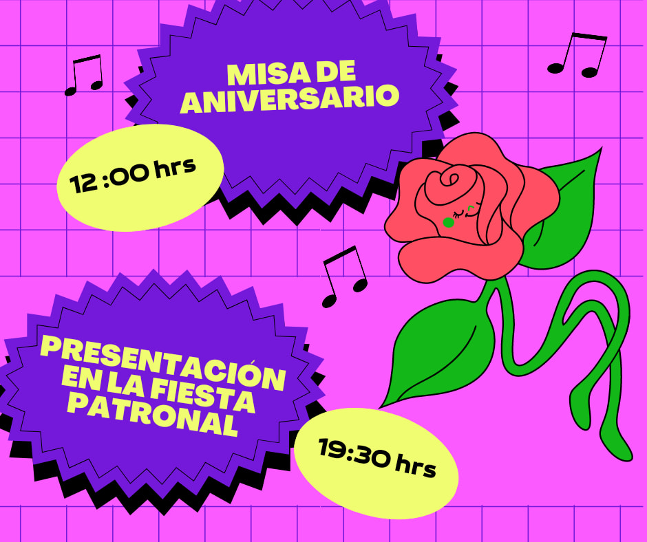

Aniversario 27 - Agosto 2022
En agosto de 2022, el Coro Asunción de María festejó su aniversario número 27 en la fiesta patronal de la parroquia Asunción de María acompañado de todas las personas que han compartido un momento con el coro
El concierto que dió el coro fue un tributo a un ícono del Tex-Mex Selena Quintanilla en el cual, el grupo interpretó varios éxitos que tuvo como:
-"Como la flor"
-"El Chico del apartamento 512"
-"No Me Queda Más"
-"Bidi Bidi Bom Bom"
-"Fotos y Recuerdos"
-"Amor Prohibido"
Y terminó con una canción que es de casa "Que nos vaya bien" de Timbiriche